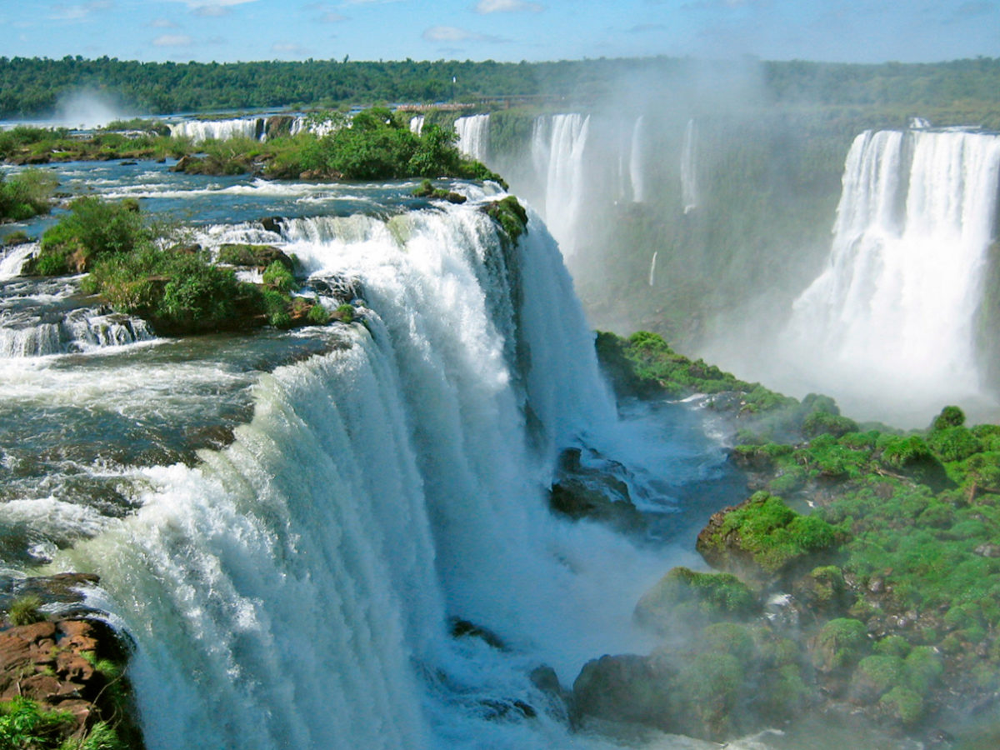

Destino Turistico: Cataratas del Iguazu
Las Cataratas del Iguazu, ubicadas en la frontera entre Argentina y Brasil, son una de las maravillas naturales mas impresionantes del mundo. Estas cataratas estan formadas por aproximadamente 275 saltos de agua que caen desde una altura de hasta 80 metros.
El Parque Nacional Iguazu, declarado Patrimonio de la Humanidad por la UNESCO, protege este increible ecosistema, hogar de una rica biodiversidad de flora y fauna. Las vistas panoramicas y los senderos ofrecen una experiencia unica para los visitantes.
Principales atractivos:
- El circuito superior, que permite admirar una vista general de las cataratas.
- El circuito inferior, donde los visitantes pueden acercarse a la base de las cataratas.
- La Garganta del Diablo, el salto mas espectacular y conocido de las cataratas.
- Paseos en bote para acercarse a los saltos y vivir la experiencia de mojarse bajo el agua.
- La fauna del parque, que incluye yaguaretes, monos, tucanes y mariposas.
Instrucciones para visitar:
1. Llega al Parque Nacional Iguazu desde la ciudad de Puerto Iguazu, en Misiones, Argentina.
2. Explora los diferentes circuitos a pie o en el tren ecologico.
3. Disfruta de las vistas panoramicas y la belleza natural de las cataratas.
